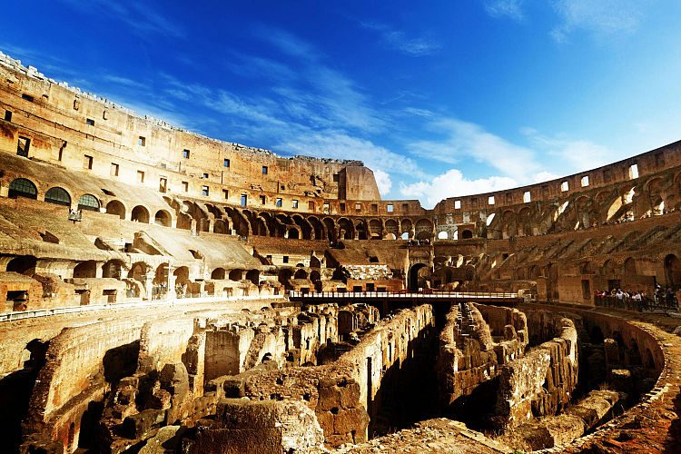

Coloseum, Italy
What is the Colosseum?
The Colosseum is the largest amphitheatre in the world and was built during the Roman Empire, with the construction beginning in 72AD and opening in 80AD. The Colosseum was host to a range of gruesome events such as animal fighting, executions and gladitorial battles. The site is located in the middle of Rome, making it an easy visit for those visting the capital
Tips on visiting
Getting to the Colloseum is very easy if you're staying in Rome, with bus routes from around the city stopping at "Colosseo" as well as it having its own stop on the Metro. Admission costs €16 and includes a guided tour. It will take around an hour to explore the site. The ticket also includes access to the Roman Forum and Palantine hill, adding these to your itinerary would require around 3 hours.
At an increased entry cost of €24 you can purchase the full experience. This gives you additional access to the arena floor and the underground. The arena floor puts you in the shoes of the gladiators, staring up at the rows of seats and imagining the atmosphere that would have filled the arena. The underground was the "backstage" of the events, where participants would wait for their turn on the arena, this area highlights the complexity of both the building and the operation of the events held there.